怪物
按进度分组，写的是长枪和弓的打法。
MR 4★ 新登场的大型怪物
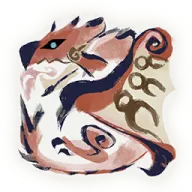
火龙地面和空中交替战斗，空中招式多，蹴爪带毒。全部招式都能普通防御。
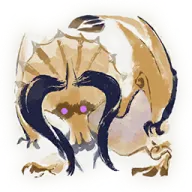
角龙只用身体和角攻击，每一下都很痛，会潜到地下。全部有伤害的招式都能普通防御。
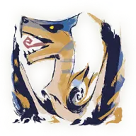
轰龙冲撞、飞扑、撕咬为主，动作大又快，近距离的咆哮会伤人。全部有伤害的招式都能普通防御。
 千刃龙
千刃龙起飞、踢击、落地切换得很快，刃鳞会造成裂伤。全部招式都能普通防御。
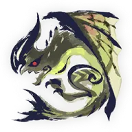
电龙⚠️ 头冠、翼、尾尖会带电。头冠电刃要防御强化，全身带电后的俯冲放电挡不住。
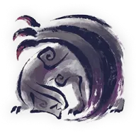
黑蚀龙招式和鳞粉会让人感染狂龙症；狂龙化后长出触角、攻击方式大变。全部有伤害的招式都能普通防御。
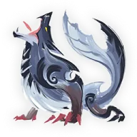
冰狼龙四脚高速冲刺，战斗中分阶段给身体披冰，后期用后腿站起连续抓击。有伤害的招式都能普通防御。
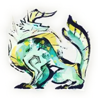
雷狼龙聚集雷光虫积蓄电能，蓄满后进入超带电状态，攻击力和敏捷上升。全部招式都能普通防御。
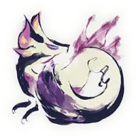
泡狐龙在地上滑行、用泡沫作战，泡沫叠两层后会打滑。全部有伤害的招式都能普通防御。
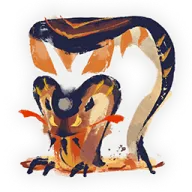
熔翁龙泥翁龙的熔岩版：钻地后头和四肢发红变软，发怒后尾巴挂上大岩球，砸岩球的大招会炸两次。
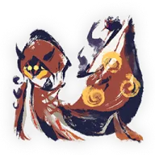
炽妃蜘蛛⚠️ 用卫蜘蛛和丝引爆攻击；嘴里喷火和吐丝要防御强化才能挡。
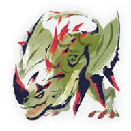
棘龙开场在睡觉；没发怒时全身很硬，发怒后变软，但冲撞会连撞。火球同时带毒、麻痹和火属性的属性异常。
MR 3★ 新登场的大型怪物
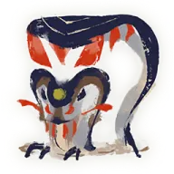
泥翁龙长尾巴是主要威胁，会到处撒泥。长枪不需要防御强化。
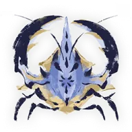
将军镰蟹爪子攻击范围大、转身快。全部招式都能普通防御。
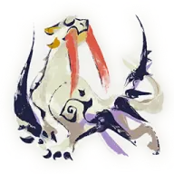
冰牙龙动作快，常绕到背后攻击。全部招式都能普通防御。
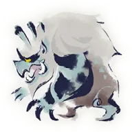
雪鬼兽攻击几乎都用前肢，兴奋后前肢生成冰块。有伤害的招式都能普通防御。 迅龙
速度极快，常侧跳绕到死角。全部招式都能普通防御，威力也是这批怪里最低的。
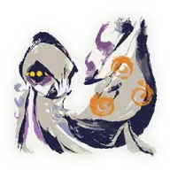
妃蜘蛛⚠️ 嘴里喷的火和吐的丝要防御强化才能挡。现在的长枪配装没有防御强化，这些招只能躲。
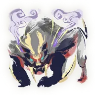
怨虎龙头部、前肢、背部、尾巴会缠上鬼火。咬住挑飞后的那次爆炸无法防御。
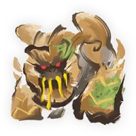
刚缠兽⚠️ 大招和右臂留下的粉尘要防御强化才能挡。平时贴着手臂侧面打。
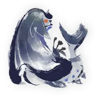
冰人鱼龙冻住地面滑行，常从画面外偷袭。有伤害的招式都能普通防御。